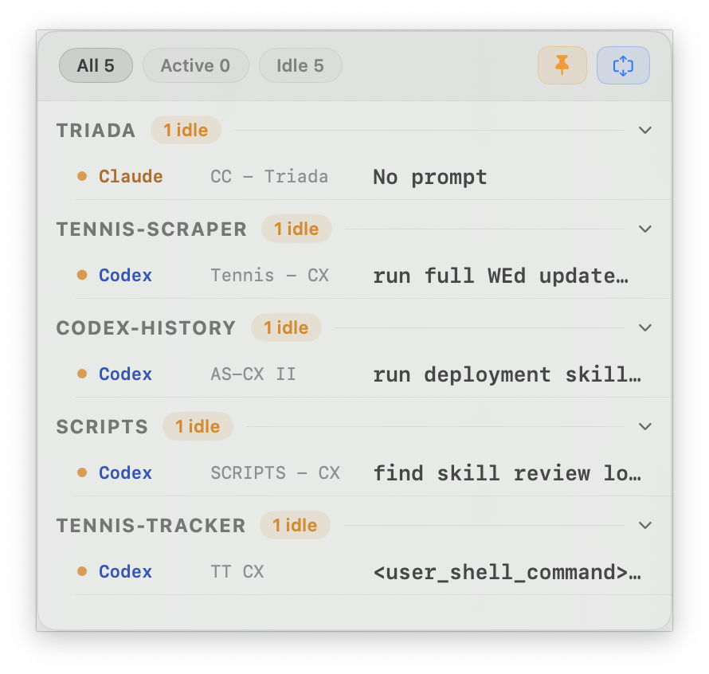
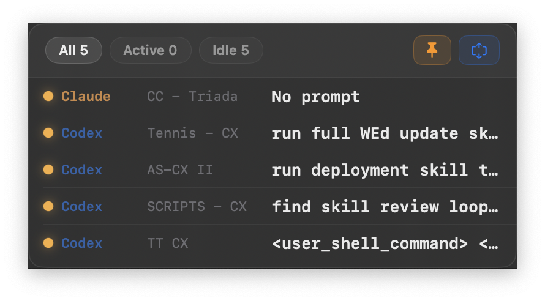
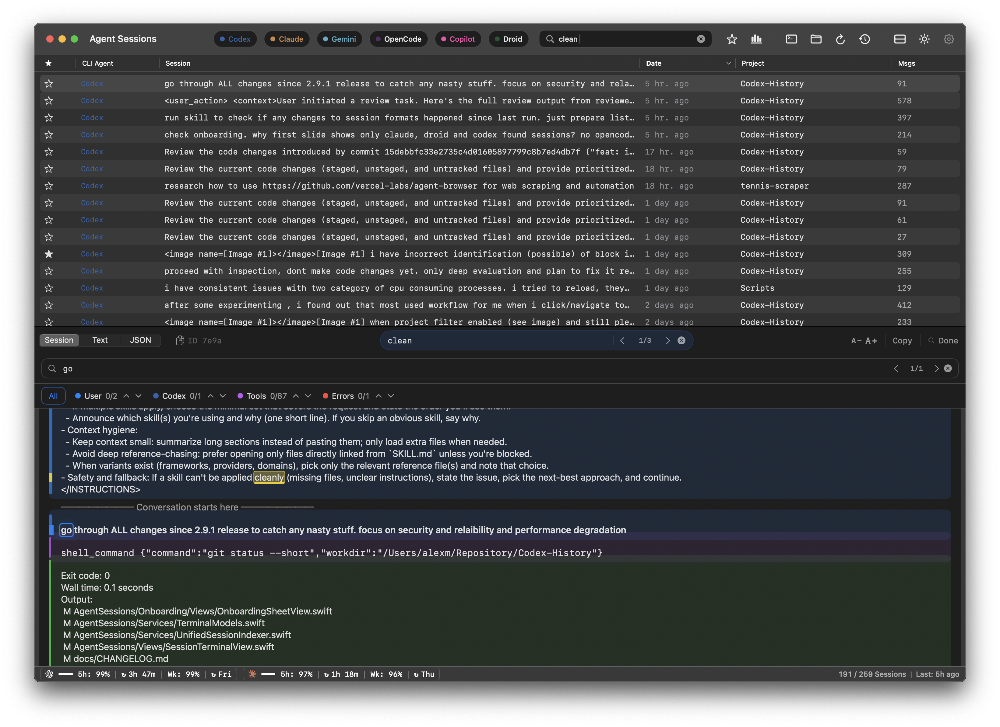
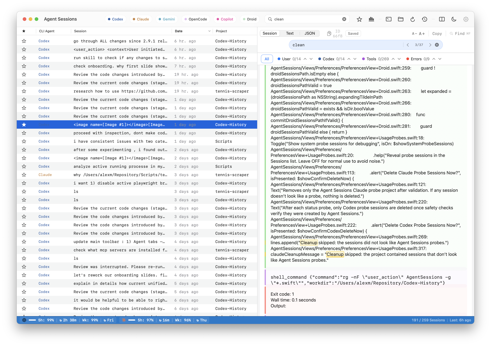
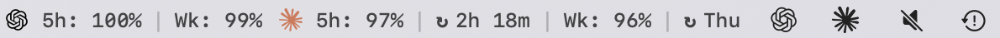
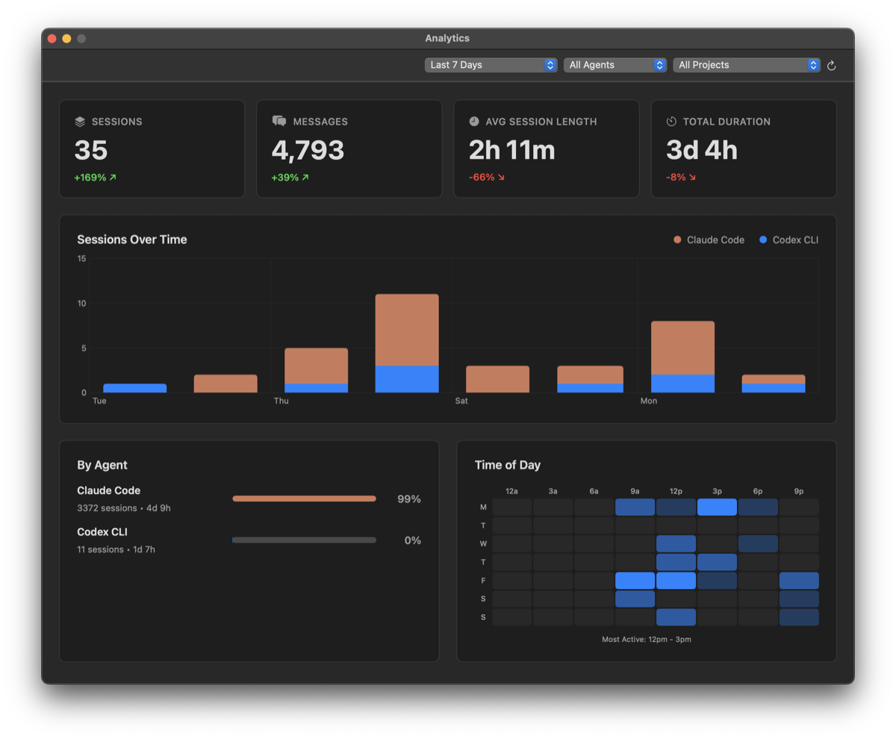

Agent Sessions CN 是一个本地优先的 macOS 会话浏览器，统一管理 Codex CLI、Claude Code、Cursor、Gemini CLI、GitHub Copilot CLI、OpenCode 与 OpenClaw 的历史会话。Droid 导入仍保留给历史数据使用，但不再作为主动维护来源。
当前版本基于原项目 jazzyalex/agent-sessions 二次开发与中文本地化，维护者：Gus616。
1. 下载 AgentSessions-ZH-3.6.2.dmg
2. 拖动 Agent Sessions.app 到“应用程序”
3. 首次打开如遇到安全提示，请前往：
系统设置 -> 隐私与安全性 -> 仍要打开在同一个窗口里统一浏览常见 AI 编码代理的历史会话。
Droid 会话导入保留给历史数据使用，但不属于当前主动支持集合。
支持跨代理会话搜索，也支持单个会话内快速定位内容。
内置图片浏览器，可查看 Codex、Claude、OpenCode 等会话中的图片输出。
用于查看 iTerm2 中活跃会话的实时 HUD，适合快速切换 Codex CLI、Claude Code 与 OpenCode 的当前工作状态。


支持复制恢复命令，快速回到历史会话，也可以直接浏览提示词、工具输出和转录内容。
支持管理保存副本，也支持在汉化版里直接删除原始 JSONL，并一并删除本地副本。
支持 Codex 与 Claude 的应用内和菜单栏用量查看，保留原项目的刷新与探测能力。
包含会话趋势、代理分布、时间热力图等分析能力，适合回顾个人 AI 编码使用模式。
主窗口与转录搜索（深色模式）

恢复与浏览会话

菜单栏用量跟踪

分析面板（深色模式）
